Free to forkNo licence and no copyright claim: build this game under your own name, or lift one idea from it. Why?
Game overview
AAL Exterminator is a one-man-army assault on a whole hostile star system. You command three units at three scales, a flying battle-suit agent, a transforming jet mecha and a siege carrier, and switch between them to take the enemy apart from high orbit down to bedrock.
Every planet and every stretch of space is one destructible, side-view tile world. The carrier pounds fortresses from orbit, the jet wins the skies and the seas, and the agent slips into tunnels and bunkers to plant a bomb where it hurts. The job is total: every hostile on the map has to go, and by the end the map looks like it.
It's built on the tech of Terrene, the pixel-art planet explorer, with the railguns of Utopia Must Fall, the layer-by-layer dismantling of Cryptark, and a pinch of Gundam SEED, Macross and Titanfall. It's one of three games grown from the same notebook, and it's set in Reactorcore's AAL universe.
Target audience
Players who love the feeling of being hugely outgunned and winning anyway: Utopia Must Fall, Cryptark, Starfox 64, Armored Core's boost, the moment a fortress reactor goes up and you're racing out ahead of the blast.
They want catharsis: something oppressive, and the power to end it completely.
Mouse aim and WASD, fast and aggressive, but with a safe place one zone up whenever the pressure gets too much.
Game's purpose
Power: one operative taking apart an entire armed system, and the terrain along with it.
Excitement: boost, railgun fire, collapsing fortresses and escape countdowns.
Meaning: the protective use of force. Every campaign ends a tyranny or an infestation, and the log remembers what came after.
It deliberately avoids draining safety (high orbit is always a sanctuary, and nothing about a death is permanent) and variety (every system, map and enemy is generated, and your powers keep changing).
Core concept
Action games usually give you one vehicle on fixed levels, or a roguelite run that starts you weak and resets when you die.
Here you're overpowered from the first minute, with three units for three scales of problem, so every target can be solved several ways: bombard it, strafe it, or sneak in and blow its core.
Star systems are generated without end, and what changes between them is the enemy and your mix of supercores, not a grind back up to strength.
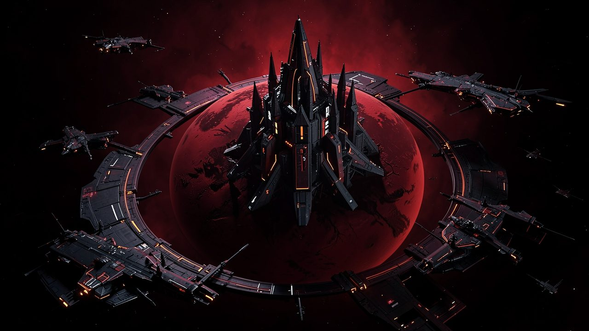
"Every offer was refused. The commission goes out only after the last one."
Lore and story
Out past the edge of kindness
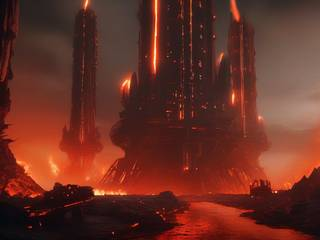
The galactic community is generous to the point of stubbornness. Any newly met people, however strange, are offered everything: abundance, immortality, a place at the table, and every piece of evidence that the offer is real. Nearly everyone accepts.
Out in the uncharted systems, a few refuse, and they're never the people who'd lose anything by accepting. They're the ones who'd lose their power: tyrants who rule whole star systems by fear, regimes that keep their people poor and frightened, armies that exist to make someone else suffer. Next to them grow the other problems no one can reason with: space monster infestations dug deep into a world, and pest swarms eating an ecosystem alive.
The exterminators
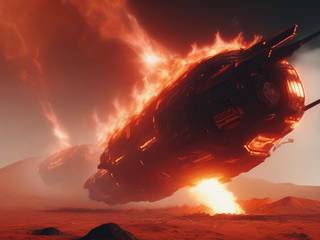
When every offer has failed, the commission goes to an exterminator: one operative with a carrier, a jet and a battle suit, all from Alteisen Arsenal Laboratories, sent to end it alone. One person, because one person is enough. The equipment is that good.
Extermination isn't the end of anyone, in this universe. Souls return in new lives, and a tyrant's will come back somewhere better, without the empire, the army or the fear. What ends is the regime. The people it held get the offer they were never allowed to hear.
The job right now
A new commission is in: a star system, an enemy with a name, a list of what it has done. Warp in, park the carrier in high orbit, and start taking it apart.
Controls and interface
You fly one unit at a time, in side view with mouse aim. The controls are the same in every unit, so switching from the jet to the agent mid-fight changes what each button does, never where it is.
Move
W A S D
Fly in any direction (the agent too)
Shift
Boost: afterburner, mech dash, suit overboost
Space
Transform the jet to mecha or back
Fire
Mouse
Aim; pointer close spreads the railgun wide, far keeps it tight
Left click
Railgun
Right click
Blade or lance: close is a slash, far is a lunge; hold to charge
F
Smart bomb: power bomb or fusion missile
Units
E
Board or leave the jet; dock with the carrier
R
Recall the jet to you
C
Call the carrier's artillery on the pointer
Q / Z
Roll the carrier, while docked at its helm
Interface
Tab
The location map: zones, targets, cores
M
Star map (on the carrier)
Esc
Pause
The HUD is minimal and line-drawn, a data readout in one corner and a crosshair. Health regenerates in every unit, faster when docked. The only real resource to watch is the smart bomb stock, which the carrier rebuilds over time: spend it all in one glorious burst, or one at a time where it matters.
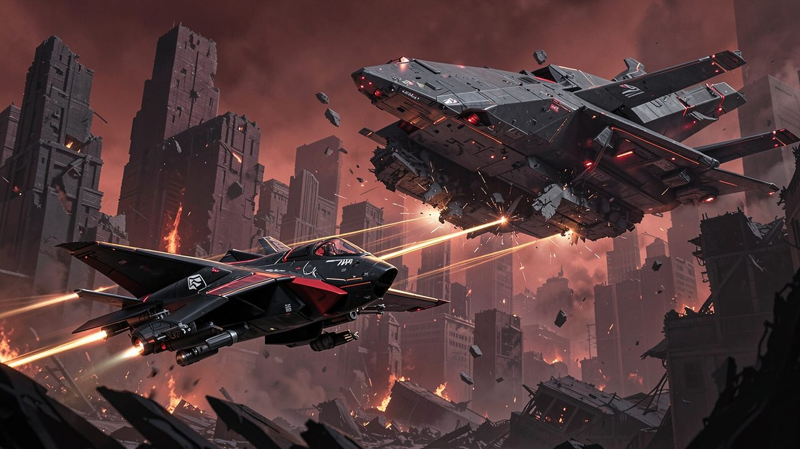
"Hold the pointer close and the railgun sprays wide. Push it out and every shot lands on one point."
Game layers
01 · Moment-to-moment
Peeling a location, layer by layer
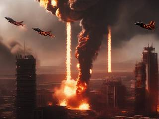
Each location defends itself in three layers: escorts, outer defenses, inner defenses around a core. That might be a whole planet, top to bottom, or a single airship. You decide how to get through: launch the jet to clear low orbit so the carrier can move in and bombard, or skip the slugfest, drop the agent at a quiet landing zone and plant a power bomb on the core.
It's fast and aggressive. You go in, melt through terrain like butter, and leave the map in pieces.
02 · Low metagame
A star system commission
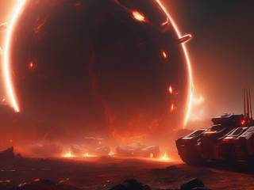
A campaign is one star system: several planets, moons, stations and asteroid fields held by one enemy, playable in any order. Every location is cleared when its last hostile is gone, and the commission is done when every location is.
Everything is generated: the maps, the enemy forces, and the enemy itself, with its name, its look, what it calls itself and what it has done.
03 · High metagame
The extermination log
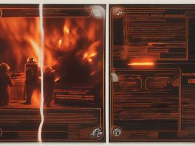
Every finished commission adds a page to your log, like a card in a collection: the enemy's mugshot, its crimes, how badly your assault mangled it, and what the system became afterwards, now that it's free. Over time the log becomes a record of how much good you've done.
Commissions never run out, because there's always another system that refused. The log doesn't score you or unlock anything. It remembers.
04 · Practical game flow
A location or a whole system
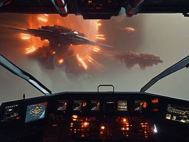
A location takes half an hour or so, a commission a few evenings. Back in high orbit nothing can reach you, so it's always a safe place to stop. Save anywhere, and the system waits exactly as you left it.
Game modes
The same campaign comes in two kinds, which differ only in who the enemy is:
Campaign
The enemy
Commission
Generated: a regime, an infestation or a plague of pests, each with its own name, look, forces and record of crimes.
Vendetta
Seeded by you. Type a name, any name, and the game builds a tyrant around it: a regime, minions, allies, a list of misdeeds and a star system to hold them. Then you go and end it. It's a pressure valve, for the days when something has been weighing on you and you'd like to watch it explode.
Features and mechanics
The heart of it
Three units, three scales
Each unit is the best tool at its own scale and clumsy outside it, so the fight keeps asking which one to bring:
The agent, a battle-suited human who flies anywhere like a superhero on a gravity-well pack. Tiny, so it slips into tunnels, ducts and bunkers where nothing bigger fits, and melts through rock with a thermal lance. Best underground, indoors and against the small fry.
The jet, a transforming fighter and mecha with twin railguns and a thermal blade. Rules everything from low orbit to the seabed, but it's too big for tunnels.
The carrier, a warp-capable warship with siege railcannons. It can break a fortress head-on, but once it comes into range, the fortress can shoot back.
The jet can be recalled to the agent anywhere in open air or space, like a Titanfall titan: it arrives in seconds through the background, needing only a clear landing zone. So the agent can go spelunking with a getaway always one key away.
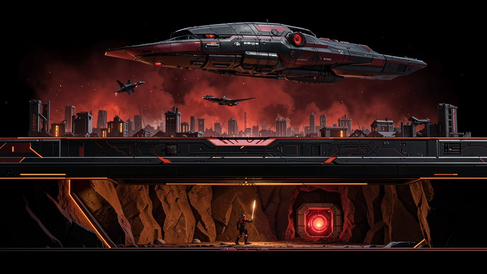
"The carrier breaks the fortress, the jet clears the sky, and the agent goes where neither fits."
One world, top to bottom
Four zones
As in Terrene, every location is one tall, side-view tile room. A planet has four zones stacked on top of each other, and each one favors a different unit:
Zone
What happens there
Best unit
High orbit
Out of range. The carrier starts here and can launch the jet and the agent, but can't fire its main guns. No enemy ever comes up here: it's always a sanctuary to retreat to.
The carrier, safe
Low orbit
No gravity. Satellites, stations and high-altitude fighting. The carrier can now bombard all the way down to the surface, and the enemy's anti-orbital weapons can hit it back.
The jet; the agent inside derelict stations
Atmosphere to surface
Dropping in lights up a re-entry burn, bigger the faster you come. Airships, ground fortresses, cities.
The jet; the agent inside airships and buildings
Underwater and underground
The jet can fight underwater, like a heavy diving suit; the agent is too exposed down there. Underground is the agent's: it's one tile wide and digs freely, while the jet is three to five tiles wide and gouges awkward holes one tile at a time.
The jet underwater, the agent underground
In space, the room lies on its side: you come in from one edge and fight across to the other.
The enemy mirrors you
Three classes of target
Every enemy, whether it's a regime's army, a monster brood or a pest swarm, comes in three classes that mirror your three units:
Class
What it is
Who fights it
Creature class
About one tile: soldiers, critters, mines, turrets
The agent
Vehicle class
One to nine tiles: tanks, fighters, gunboats, big beasts
The jet
Fortress class
From 5×5 up to about 50×50 tiles: stations, bunkerships, citadels, hives
All three: the carrier on the hull, the jet on intermediate weak points, the agent on the critical ones
Creatures and vehicles are simple: one attack, maybe one passive ability, one way of moving. What they lack alone they make up in numbers. They can be organic, mechanical, biometal or cyborg, and they can turn up anywhere except high orbit.
Blow the core, then run
Fortress cores and escape countdowns
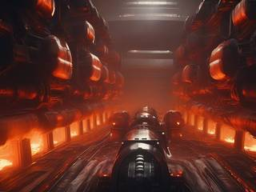
A fortress is a body of blocks over a background, like Cryptark's derelicts, with one or more core modules somewhere inside. Destroy a core and the whole structure goes with it: small explosions break out all over it, a countdown starts, and you run for the exit. Then the final blast swells from the center and swallows the entire thing, hiding the moment its background vanishes.
Get far enough away or take a beating. It's Super Metroid's escape sequence, built into every big target.
Melt it like butter
Everything is made of blocks
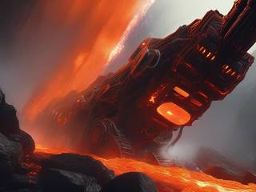
Terrain, airships, space stations, bunkers and buildings are all built from the same static blocks, so all of it can be destroyed. A simple version gives every block the same strength; a richer one has soft and hard materials. The edges of the map are solid, and the bottom is bedrock that nothing breaks.
Charged attacks cross a threshold into a powered mode that wrecks terrain: the jet's blade carves through walls, the agent's lance tunnels, the smart bombs crater. Below the threshold, strikes only hurt enemies, so you choose when the scenery goes too.
A home that fights
The carrier
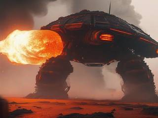
Seen from the front, the carrier is shaped like a turtle. Its upper half is an impenetrable shell housing the gravity-well engines, warp drive and shield generator, built to face whatever it flies into. Its lower half holds a big turret on a 180° mount, which is everything at once: the jet's launch catapult, its repair and rearm gantry, the agent's door home, and the carrier's main gun.
Dock the jet into that turret and it locks in like Gundam SEED's METEOR units: its twin railguns join the carrier's arsenal, supercharged, and you take the carrier's helm. Around the turret sit two to four point-defense laser turrets and a gravity tractor that can grab things in front of the ship, hold them under the main gun, or hurl an asteroid at someone.
From high orbit it can also call in artillery where the agent or jet points: precise siege-breaking shots, suppressive fire to deny an area, or a saturation bombardment. It can't be destroyed, only knocked out of the fight for a while to repair, and it heals and rearms whatever docks with it.
Fighter and mecha
The jet
The jet is a Macross-style transformer that can't crash: fly it into terrain and it lands as a mecha on the spot, and it folds back into a jet as soon as there's open space around it. The mecha hovers in place and fights; the jet flies with Nova Drift's handling, where higher speed means more drag.
Twin rapid railguns in the style of Utopia Must Fall: hold the pointer close for a wide spray, far for tight, accurate fire.
A thermal blade, drawn like a beam saber: a slash near the jet pushes enemies away, a lunge toward a far pointer pierces and stuns. In jet mode it's a searing lance or a pushing aura.
A fusion smart bomb, half missile and half grenade, in the spirit of Starfox 64's.
A grapple tether to moor the jet to a station or asteroid while the agent explores nearby.
If the jet is shot down, the agent ejects and has to hold out until the carrier builds a new one and drops it in. That costs time, nothing more.
Take their edge
Supercores
Enemies carry supercores, and you take them. Each one boosts one thing, for one unit or all of them: railgun fire rate, blade reach, boost recharge, smart bomb yield. They stack, so you can amass them, but each has a durability that wears down with use until it breaks.
So you're constantly cycling: old cores crumble, new ones come in from the latest enemy, and the facets you're strong in keep shifting. No two campaigns play the same, and you never grow into an unstoppable, bored god.
Nothing un-happens
Death, regrouping and your own colors
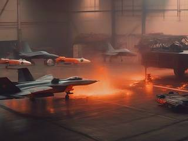
The agent can die, but never for good: it wakes on the carrier after a while, and the jet flies itself home. The world doesn't rewind. While you're gone, the enemy regroups: some of what you destroyed is rebuilt, some survivors dig back in. Dying costs ground, not the campaign.
You choose your callsign and tint each unit's body, engine glow and weapon fire separately. Player sprites can be replaced with your own, full-colour ones included, so the exterminator can be anyone you like.
Trivia
Three games from one notebook
Reactorcore played Terrene, a pixel-art planet explorer, liked its world of tall planet slices, and kept wanting it to be something else. The result was one long design for a planetary explorer, the Inspector, that tried to be everything at once, and then three remixes that each took one part of it and went all the way: this assault, the gentle collectathon of AAL Collector, and the hands-only survival race of AAL Voyager. The Inspector's carrier, jet and agent became Exterminator's three units.
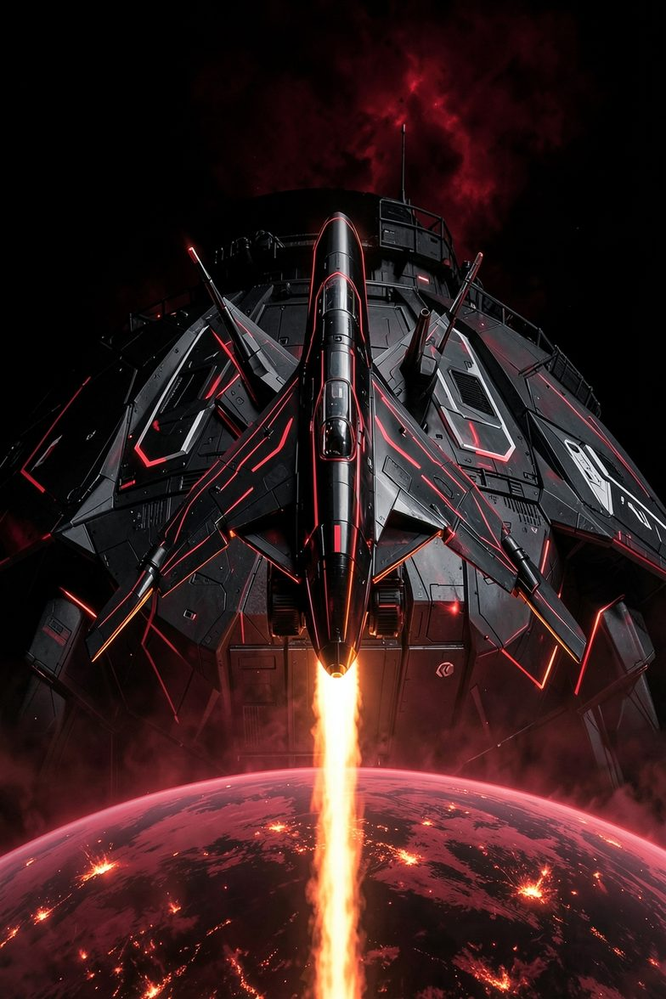
Commission received
AAL Exterminator: Three-Layer Planetary Assault
Target: one star system. Hostiles: all of them. Every offer has been made and refused. Support: none, because none is needed.
Park the carrier in high orbit. Launch the jet. Drop the agent where the walls are thinnest. When the core goes, run.